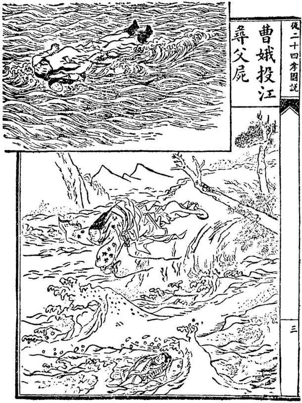
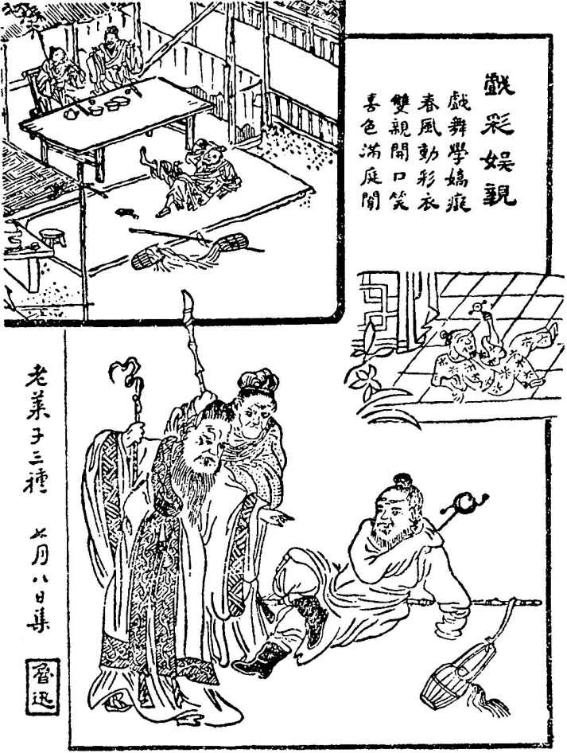
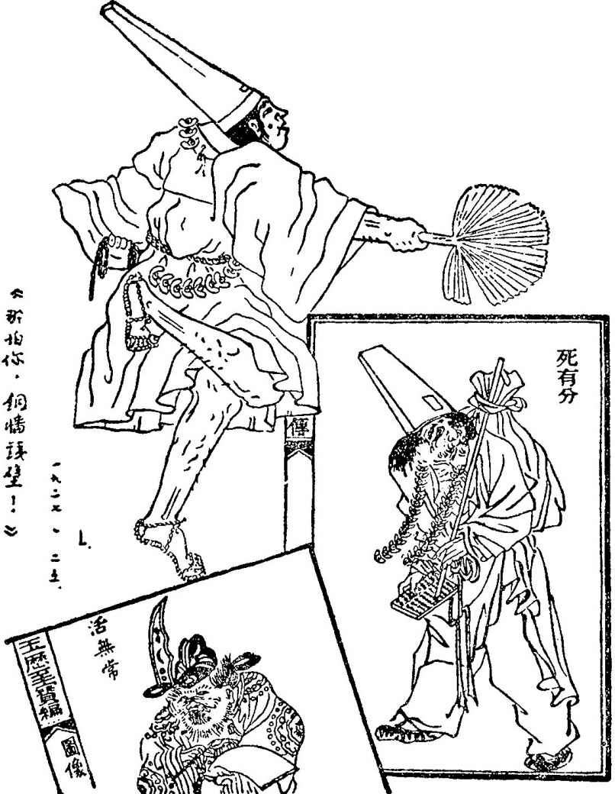
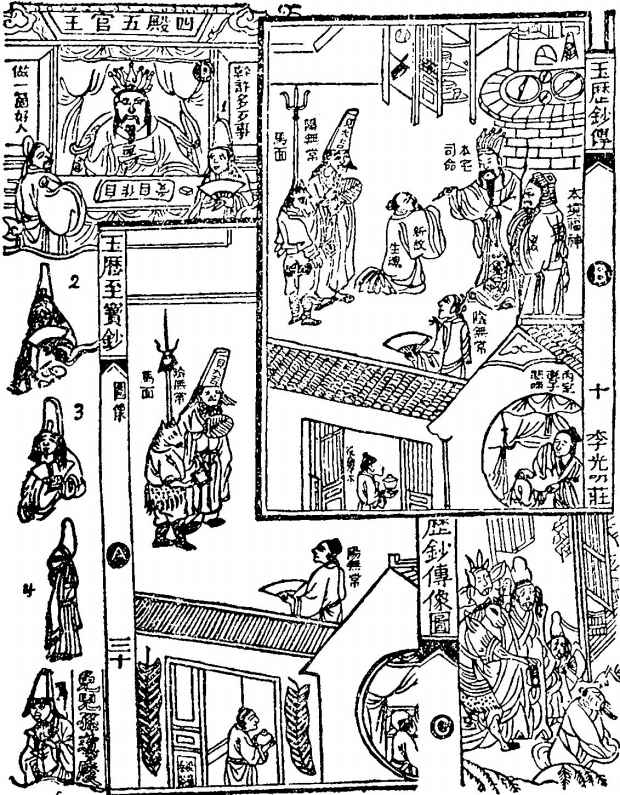
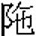
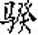

我在第三篇讲《二十四孝》的开头，说北京恐吓小孩的“马虎子”应作“麻胡子”，是指麻叔谋，而且以他为胡人。现在知道是错了，“胡”应作“祜”，是叔谋之名，见唐人李济翁[242]做的《资暇集》卷下，题云《非麻胡》。原文如次：
“俗怖婴儿曰：麻胡来！不知其源者，以为多髯之神而验刺者，非也。隋将军麻祜，性酷虐，炀帝令开汴河，威棱既盛，至稚童望风而畏，互相恐吓曰：麻祜来！稚童语不正，转祜为胡。只如宪宗朝泾将郝玭[243]，蕃中皆畏惮，其国婴儿啼者，以玭怖之则止。又，武宗朝，闾阎孩孺相胁云：薛尹[244]来！咸类此也。况《魏志》载张文远辽[245]来之明证乎？”（原注：麻祜庙在睢阳。鄜方节度李丕即其后。丕为重建碑。）
原来我的识见，就正和唐朝的“不知其源者”相同，贻讥于千载之前，真是咎有应得，只好苦笑。但又不知麻祜庙碑或碑文，现今尚在睢阳或存于方志中否？倘在，我们当可以看见和小说《开河记》所载相反的他的功业。
因为想寻几张插画，常维钧[246]兄给我在北京搜集了许多材料，有几种是为我所未曾见过的。如光绪己卯（1879）肃州胡文炳[247]作的《二百卌孝图》——原书有注云：“卌读如习。”我真不解他何以不直称四十，而必须如此麻烦——即其一。我所反对的“郭巨埋儿”，他于我还未出世的前几年，已经删去了。序有云：
“……坊间所刻《二十四孝》，善矣。然其中郭巨埋儿一事，揆之天理人情，殊不可以训。……炳窃不自量，妄为编辑。凡矫枉过正而刻意求名者，概从割爱；惟择其事之不诡于正，而人人可为者，类为六门。……”
这位肃州胡老先生的勇决，委实令我佩服了。但这种意见，恐怕是怀抱者不乏其人，而且由来已久的，不过大抵不敢毅然删改，笔之于书。如同治十一年（1872）刻的《百孝图》[248]，前有纪常郑绩序，就说：
“……况迩来世风日下，沿习浇漓，不知孝出天性自然，反以孝作另成一事。且择古人投炉[249]埋儿为忍心害理，指割股抽肠为损亲遗体。殊未审孝只在乎心，不在乎迹。尽孝无定形，行孝无定事。古之孝者非在今所宜，今之孝者难泥古之事。因此时此地不同，而其人其事各异，求其所以尽孝之心则一也。子夏曰：事父母能竭其力。故孔门问孝，所答何尝有同然乎？……”
则同治年间就有人以埋儿等事为“忍心害理”，灼然可知。至于这一位“纪常郑绩”先生的意思，我却还是不大懂，或者像是说：这些事现在可以不必学，但也不必说他错。
这部《百孝图》的起源有点特别，是因为见了“粤东颜子”的《百美新咏》[250]而作的。人重色而己重孝，卫道之盛心可谓至矣。虽然是“会稽俞葆真兰浦编辑”，与不佞有同乡之谊，——但我还只得老实说：不大高明。例如木兰从军[251]的出典，他注云：“隋史”。这样名目的书，现今是没有的；倘是《隋书》[252]，那里面又没有木兰从军的事。
而中华民国九年（1920），上海的书店却偏偏将它用石印翻印了，书名的前后各添了两个字：《男女百孝图全传》。第一叶上还有一行小字道：家庭教育的好模范。又加了一篇“吴下大错王鼎谨识”的序，开首先发同治年间“纪常郑绩”先生一流的感慨：
“慨自欧化东渐，海内承学之士，嚣嚣然侈谈自由平等之说，致道德日就沦胥，人心日益浇漓，寡廉鲜耻，无所不为，侥幸行险，人思幸进，求所谓砥砺廉隅，束身自爱者，世不多睹焉。……起观斯世之忍心害理，几全如陈叔宝[253]之无心肝。长此滔滔，伊何底止？……”
其实陈叔宝模胡到好像“全无心肝”，或者有之，若拉他来配“忍心害理”，却未免有些冤枉。这是有几个人以评“郭巨埋儿”和“李娥投炉”的事的。
至于人心，有几点确也似乎正在浇漓起来。自从《男女之秘密》，《男女交合新论》出现后，上海就很有些书名喜欢用“男女”二字冠首。现在是连“以正人心而厚风俗”的《百孝图》上也加上了。这大概为因不满于《百美新咏》而教孝的“会稽俞葆真兰浦”先生所不及料的罢。
从说“百行之先”[254]的孝而忽然拉到“男女”上去，仿佛也近乎不庄重，——浇漓。但我总还想趁便说几句，——自然竭力来减省。
我们中国人即使对于“百行之先”，我敢说，也未必就不想到男女上去的。太平无事，闲人很多，偶有“杀身成仁舍生取义”的，本人也许忙得不暇检点，而活着的旁观者总会加以绵密的研究。曹娥的投江觅父[255]，淹死后抱父尸出，是载在正史[256]，很有许多人知道的。但这一个“抱”字却发生过问题。
我幼小时候，在故乡曾经听到老年人这样讲：
“……死了的曹娥，和她父亲的尸体，最初是面对面抱着浮上来的。然而过往行人看见的都发笑了，说：哈哈！这么一个年青姑娘抱着这么一个老头子！于是那两个死尸又沉下去了；停了一刻又浮起来，这回是背对背的负着。”
好！在礼义之邦里，连一个年幼——呜呼，“娥年十四”而已——的死孝女要和死父亲一同浮出，也有这么艰难！
我检查《百孝图》和《二百卌孝图》，画师都很聪明，所画的是曹娥还未跳入江中，只在江干啼哭。但吴友如[257]画的《女二十四孝图》（1892）却正是两尸一同浮出的这一幕，而且也正画作“背对背”，如第一图的上方。我想，他大约也知道我所听到的那故事的。还有《后二十四孝图说》，也是吴友如画，也有曹娥，则画作正在投江的情状，如第一图下。
就我现今所见的教孝的图说而言，古今颇有许多遇盗，遇虎，遇火，遇风的孝子，那应付的方法，十之九是“哭”和“拜”。

中国的哭和拜，什么时候才完呢？
至于画法，我以为最简古的倒要算日本的小田海僊本，这本子早已印入《点石斋丛画》里，变成国货，很容易入手的了。吴友如画的最细巧，也最能引动人。但他于历史画其实是不大相宜的；他久居上海的租界里，耳濡目染，最擅长的倒在作“恶鸨虐妓”，“流氓拆梢[258]”一类的时事画，那真是勃勃有生气，令人在纸上看出上海的洋场来。但影响殊不佳，近来许多小说和儿童读物的插画中，往往将一切女性画成妓女样，一切孩童都画得像一个小流氓，大半就因为太看了他的画本的缘故。
而孝子的事迹也比较地更难画，因为总是惨苦的多。譬如“郭巨埋儿”，无论如何总难以画到引得孩子眉飞色舞，自愿躺到坑里去。还有“尝粪心忧”[259]，也不容易引人入胜。还有老莱子的“戏彩娱亲”，题诗上虽说“喜色满庭帏”，而图画上却绝少有有趣的家庭的气息。
我现在选取了三种不同的标本，合成第二图。上方的是《百孝图》中的一部分，“陈村何云梯”画的，画的是“取水上堂诈跌卧地作婴儿啼”这一段。也带出“双亲开口笑”来。中间的一小块是我从“直北李锡彤”画的《二十四孝图诗合刊》上描下来的，画的是“著五色斑斓之衣为婴儿戏于亲侧”这一段；手里捏着“摇咕咚”，就是“婴儿戏”这三个字的点题。但大约李先生觉得一个高大的老头子玩这样的把戏究竟不像样，将他的身子竭力收缩，画成一个有胡子的小孩子了。然而仍然无趣。至于线的错误和缺少，那是不能怪作者的，也不能埋怨我，只能去骂刻工。查这刻工当前清同治十二年（1873）时，是在“山东省布政司街南首路西鸿文堂刻字处”。下方的是“民国壬戌”（1922）慎独山房刻本，无画人姓名，但是双料画法，一面“诈跌卧地”，一面“为婴儿戏”，将两件事合起来，而将“斑斓之衣”忘却了。吴友如画的一本，也合两事为一，也忘了斑斓之衣，只是老莱子比较的胖一些，且绾着双丫髻，——不过还是无趣味。

人说，讽刺和冷嘲只隔一张纸，我以为有趣和肉麻也一样。孩子对父母撒娇可以看得有趣，若是成人，便未免有些不顺眼。放达的夫妻在人面前的互相爱怜的态度，有时略一跨出有趣的界线，也容易变为肉麻。老莱子的作态的图，正无怪谁也画不好。像这些图画上似的家庭里，我是一天也住不舒服的，你看这样一位七十岁的老太爷整年假惺惺地玩着一个“摇咕咚”。
汉朝人在宫殿和墓前的石室里，多喜欢绘画或雕刻古来的帝王，孔子弟子，列士，列女，孝子之类的图。宫殿当然一椽不存了；石室却偶然还有，而最完全的是山东嘉祥县的武氏石室[260]。我仿佛记得那上面就刻着老莱子的故事。但现在手头既没有拓本，也没有《金石萃编》[261]，不能查考了；否则，将现时的和约一千八百年前的图画比较起来，也是一种颇有趣味的事。
关于老莱子的，《百孝图》上还有这样的一段：
“……莱子又有弄雏娱亲之事：尝弄雏于双亲之侧，欲亲之喜。”（原注：《高士传》[262]。）
谁做的《高士传》呢？嵇康的，还是皇甫谧的？也还是手头没有书，无从查考。只在新近因为白得了一个月的薪水，这才发狠买来的《太平御览》上查了一通，到底查不着，倘不是我粗心，那就是出于别的唐宋人的类书[263]里的了。但这也没有什么大关系。我所觉得特别的，是文中的那“雏”字。
我想，这“雏”未必一定是小禽鸟。孩子们喜欢弄来玩耍的，用泥和绸或布做成的人形，日本也叫Hina，写作“雏”。他们那里往往存留中国的古语；而老莱子在父母面前弄孩子的玩具，也比弄小禽鸟更自然。所以英语的Doll，即我们现在称为“洋囡囡”或“泥人儿”，而文字上只好写作“傀儡”的，说不定古人就称“雏”，后来中绝，便只残存于日本了。但这不过是我一时的臆测，此外也并无什么坚实的凭证。
这弄雏的事，似乎也还没有人画过图。
我所搜集的另一批，是内有“无常”的画像的书籍。一曰《玉历钞传警世》（或无下二字），一曰《玉历至宝钞》（或作编）。其实是两种都差不多的。关于搜集的事，我首先仍要感谢常维钧兄，他寄给我北京龙光斋本，又鉴光斋本；天津思过斋本，又石印局本；南京李光明庄本。其次是章矛尘[264]兄，给我杭州玛瑙经房本，绍兴许广记本，最近石印本。又其次是我自己，得到广州宝经阁本，又翰元楼本。
这些《玉历》，有繁简两种，是和我的前言相符的。但我调查了一切无常的画像之后，却恐慌起来了。因为书上的“活无常”是花袍，纱帽，背后插刀；而拿算盘，戴高帽子的却是“死有分”！虽然面貌有凶恶和和善之别，脚下有草鞋和布（？）鞋之殊，也不过画工偶然的随便，而最关紧要的题字，则全体一致，曰：“死有分”。呜呼，这明明是专在和我为难。
然而我还不能心服。一者因为这些书都不是我幼小时候所见的那一部，二者因为我还确信我的记忆并没有错。不过撕下一叶来做插画的企图，却被无声无臭地打得粉碎了。只得选取标本各一——南京本的死有分和广州本的活无常——之外，还自己动手，添画一个我所记得的目连戏或迎神赛会中的“活无常”来塞责，如第三图上方。好在我并非画家，虽然太不高明，读者也许不至于嗔责罢。先前想不到后来，曾经对于吴友如先生辈颇说过几句蹊跷话，不料曾几何时，即须自己出丑了，现在就预先辩解几句在这里存案。但是，如果无效，那也只好直抄徐（印世昌）大总统的哲学：听其自然。[265]
还有不能心服的事，是我觉得虽是宣传《玉历》的诸公，于阴间的事情其实也不大了然。例如一个人初死时的情状，那图像就分成两派。一派是只来一位手执钢叉的鬼卒，叫作“勾魂使者”，此外什么都没有；一派是一个马面，两个无常——阳无常和阴无常——而并非活无常和死有分。倘说，那两个就是活无常和死有分罢，则和单个的画像又不一致。如第四图版上的A，阳无常何尝是花袍纱帽？只有阴无常却和单画的死有分颇相像的，但也放下算盘拿了扇。这还可以说大约因为其时是夏天，然而怎么又长了那么长的络腮胡子了呢？难道夏天时疫多，他竟忙得连修刮的工夫都没有了么？这图的来源是天津思过斋的本子，合并声明；还有北京和广州本上的，也相差无几。

B是从南京的李光明庄刻本上取来的，图画和A相同，而题字则正相反了：天津本指为阴无常者，它却道是阳无常。但和我的主张是一致的。那么，倘有一个素衣高帽的东西，不问他胡子之有无，北京人，天津人，广州人只管去称为阴无常或死有分，我和南京人则叫他活无常，各随自己的便罢。“名者，实之宾也”[266]，不关什么紧要的。
不过我还要添上一点C图，是绍兴许广记刻本中的一部分，上面并无题字，不知宣传者于意云何。我幼小时常常走过许广记的门前，也闲看他们刻图画，是专爱用弧线和直线，不大肯作曲线的，所以无常先生的真相，在这里也难以判然。只是他身边另有一个小高帽，却还能分明看出，为别的本子上所无。这就是我所说过的在赛会时候出现的阿领。他连办公时间也带着儿子（？）走，我想，大概是在叫他跟随学习，预备长大之后，可以“无改于父之道”[267]的。
除勾摄人魂外，十殿阎罗王中第四殿五官王的案桌旁边，也什九站着一个高帽脚色。如D图，1取自天津的思过斋本，模样颇漂亮；2是南京本，舌头拖出来了，不知何故；3是广州的宝经阁本，扇子破了；4是北京龙光斋本，无扇，下巴之下一条黑，我看不透它是胡子还是舌头；5是天津石印局本，也颇漂亮，然而站到第七殿泰山王的公案桌边去了：这是很特别的。
又，老虎噬人的图上，也一定画有一个高帽的脚色，拿着纸扇子暗地里在指挥。不知道这也就是无常呢，还是所谓“伥鬼”[268]？但我乡戏文上的伥鬼都不戴高帽子。

研究这一类三魂渺渺，七魄茫茫，“死无对证”的学问，是很新颖，也极占便宜的。假使征集材料，开始讨论，将各种往来的信件都编印起来，恐怕也可以出三四本颇厚的书，并且因此升为“学者”。但是，“活无常学者”，名称不大冠冕，我不想干下去了，只在这里下一个武断：
《玉历》式的思想是很粗浅的：“活无常”和“死有分”，合起来是人生的象征。人将死时，本只须死有分来到。因为他一到，这时候，也就可见“活无常”。
但民间又有一种自称“走阴”或“阴差”的，是生人暂时入冥，帮办公事的脚色。因为他帮同勾魂摄魄，大家也就称之为“无常”；又以其本是生魂也，则别之曰“阳”，但从此便和“活无常”隐然相混了。如第四图版之A，题为“阳无常”的，是平常人的普通装束，足见明明是阴差，他的职务只在领鬼卒进门，所以站在阶下。
既有了生魂入冥的“阳无常”，便以“阴无常”来称职务相似而并非生魂的死有分了。
做目连戏和迎神赛会虽说是祷祈，同时也等于娱乐，扮演出来的应该是阴差，而普通状态太无趣，——无所谓扮演，——不如奇特些好，于是就将“那一个无常”的衣装给他穿上了；——自然原也没有知道得很清楚。然而从此也更传讹下去。所以南京人和我之所谓活无常，是阴差而穿着死有分的衣冠，顶着真的活无常的名号，大背经典，荒谬得很的。
不知海内博雅君子，以为何如？
我本来并不准备做什么后记，只想寻几张旧画像来做插图，不料目的不达，便变成一面比较，剪贴，一面乱发议论了。那一点本文或作或辍地几乎做了一年，这一点后记也或作或辍地几乎做了两个月。天热如此，汗流浃背，是亦不可以已乎：爰为结。
一九二七年七月十一日，写完于广州东堤寓楼之西窗下。
[1] 本篇最初发表于1927年5月25日北京《莽原》半月刊第二卷第十期。
[2] 指奉军飞临北京轰炸的飞机。参看本卷第230页注〔2〕。
[3] “水横枝” 一种盆景。在广州等南方暖和地区，取栀子的一段浸植于水钵中，能长绿叶，可供观赏。
[4] 《莽原》 文艺刊物，鲁迅编辑。1925年4月24日创刊于北京。初为周刊，附《京报》发行，同年11月27日出至第三十二期休刊。1926年1月10日起改为半月刊，由未名社出版。1926年8月鲁迅离京后，改由韦素园接编。1927年12月25日出至第四十八期停刊。
[5] 北京寓所 指作者在北京阜成门内西三条胡同二十一号的寓所。现为鲁迅博物馆的一部分。
[6] 流离中 1926年三一八惨案后，北洋政府曾拟通缉当时北京文教界人士鲁迅等五十人（参看《而已集·大衍发微》），作者曾先后避居山本医院、德国医院、法国医院等处。避居德国医院时因病房已满，只得住入一间堆积杂物兼作木匠作场的房子。
[8] 本篇最初发表于1926年3月10日《莽原》半月刊第一卷第五期。
[9] 名人或名教授 指当时现代评论派陈西滢等人。1926年1月20日《晨报副刊》发表岂明《闲话的闲话之闲话》一文，其中说“北京有两位新文化新文学的名人名教授”在诬蔑女学生；同月30日陈西滢即在同一副刊上发表《〈闲话的闲话之闲话〉引出来的几封信》，其中《致岂明》一信说：“我虽然配不上称为新文化新文学的名人名教授，也未免要同其余的读者一样，有些疑心先生骂的有我在里面，虽然我又拿不着把柄。”
[10] “负有指导青年责任的前辈” 指徐志摩、陈西滢等。当时作者和现代评论派的论争正在继续，徐志摩在1926年2月3日《晨报副刊》发表《结束闲话，结束废话》一文，其中有双方都是“负有指导青年责任的前辈”之类的话。
[11] “不好惹” 这是徐志摩的话。1926年1月30日《晨报副刊》发表徐志摩为陈西滢辩护的《关于下面一束通信告读者们》，其中说：“说实话，他也不是好惹的。”
[12] 浑身发热 这是讥讽陈西滢的话。陈在1926年1月30日《晨报副刊》发表的《致志摩》中说：“昨晚因为写另一篇文章，睡迟了，今天似乎有些发热。今天写了这封信，已经疲倦了。”
[13] 以动机来褒贬作品 这也是针对陈西滢的。陈在《现代评论》第二卷第四十八期（1925年11月7日）的《闲话》中说：“一件艺术品的产生，除了纯粹的创造冲动，是不是常常还夹杂着别种动机？是不是应当夹杂着别种不纯洁的动机？……年青的人，他们观看文艺美术是用十二分虔敬的眼光，一定不愿意承认创造者的动机是不纯粹的吧。可是，看一看古今中外的各种文艺美术品，我们不能不说它们的产生的动机大都是混杂的。”
[14] 覃哈特（1870—1915） 今译德恩哈尔特，德国文史学家、民俗学者。
[15] 日耳曼人 古代居住在欧洲东北部的一些部落的总称。起初从事游牧、打猎，公元前一世纪转向定居。公元初分成东、西、北数支，开始阶级分化，出现贵族。东、西二支在公元四到五世纪联合斯拉夫人和罗马奴隶等，推翻了西罗马帝国。此后，他们在罗马领土上建立了许多封建王国。各支日耳曼人同其他原居民结合，形成近代英、德、荷兰、瑞典、挪威、丹麦等民族的祖先。
[16] “公理”“正义” 这是陈西滢等常用的字眼。如在1925年11月北京女子师范大学复校后，陈西滢等就在宴会席上组织所谓“教育界公理维持会”，支持北洋政府迫害学生和教育界进步人士。参看《华盖集·“公理”的把戏》。
[17] “颜厚有忸怩” 语出《尚书·五子之歌》：“郁陶乎予心，颜厚有忸怩。”意思是脸皮虽厚，内心也感到惭愧。
[18] 万生园 也作万牲园，清末设立的动物园，今北京动物园的前身。
[19] “党同伐异” 语出《后汉书·党锢传序》。意思是纠合同伙，攻击异己。陈西滢曾用此语影射攻击鲁迅，他在《现代评论》第三卷第五十三期（1925年12月12日）的《闲话》中说：“中国人是没有是非的……凡是同党，什么都是好的，凡是异党，什么都是坏的。”
[20] 大勃吕该尔（1525—1569） 通译勃鲁盖尔，欧洲文艺复兴时期法兰德斯的讽刺画家。Allegorie der Wollust，德语，意思是“情欲的喻言”。
[21] 弗罗特（1856—1939） 通译弗洛伊德，奥地利精神病学家，精神分析学说的创立者。他认为文学、艺术、哲学、宗教等一切精神现象，都是人们因受压抑而潜藏在下意识里的某种“生命力”（Libido），特别是性欲的潜力所产生的。
[22] 章士钊（1881—1973） 字行严，湖南善化（今属长沙）人。曾译有《茀罗乙德叙传》和《心解学》。
[23] “问名”“纳采” 旧时议婚中的仪式。“问名”是男方通过媒妁问女方的姓名和出生年月日；“纳采”是向女方送定婚的礼物。
[24] “阴险的暗示” 这也是陈西滢的话。陈为了否认他说过诬蔑女学生的话，在《致岂明》的信中说：“这话先生说了不止一次了，可是好像每次都在骂我的文章里，而且语气里很带些阴险的暗示。”
[26] Edgar Allan Poe 爱伦·坡（1809—1849），美国诗人、小说家。他在短篇小说《黑猫》中，写一个囚犯自述的故事：他因杀死一只猫而被神秘的黑猫逼成了谋杀犯。
[27] “猫婆” 日本民间传说：有个老太婆养的一只猫，年久成了精怪；它把老太婆吃掉，又幻变成她的形状去害人。
[28] “猫鬼” 《北史·独孤信传》中记有猫鬼杀人的情节：“

性好左道，其外祖母高氏先事猫鬼，已杀其舅郭沙罗，因转入其家。……每以子日夜祀之。言子者，鼠也。其猫鬼每杀人者，所死家财物潜移于畜猫鬼家。”[29] “八戒招赘” 指猪八戒在高老庄入赘高太公家的故事，见于《西游记》第十八回。
[30] “老鼠成亲” 旧时江浙一带的民间传说：夏历正月十四日的半夜是老鼠成亲的日期。
[31] “慰情聊胜无” 语出晋代陶渊明诗《和刘柴桑》：“弱女虽非男，慰情良胜无。”
[32] 本篇最初发表于1926年3月25日《莽原》半月刊第一卷第六期。
[33] 长妈妈 绍兴东浦大门溇人。死于1899年（清光绪二十五年）4月。夫家姓余。文末提及她“过继的儿子”名五九，是一个裁缝。
[34] 福橘 福建产的橘子。因带有“福”字，为取吉利，旧时江浙民间有在夏历元旦早晨吃“福橘”的习俗。
[35] 《山海经》 十八卷，约公元前四世纪至二世纪间的作品。内容主要是我国民间传说中的地理知识，还保存了不少上古时代流传下来的神话故事。鲁迅称之为“古之巫书”。参看《中国小说史略·神话与传说》。
[36] 远房的叔祖 指周兆蓝（1844—1898），字玉田，清末秀才。
[37] 制艺和试帖诗 都是科举考试规定的公式化诗文。制艺，即摘取“四书”“五经”中的文句命题、立论的八股文；试帖诗，大抵取古人诗句或成语命题，冠以“赋得”二字，并限韵脚，一般为五言八韵。这里指当时书坊刊印的八股文和试帖诗的范本。
[38] 陆玑 字元恪，三国时吴国吴郡（治今苏州）人，曾任太子中庶子。《毛诗草木鸟兽虫鱼疏》，二卷，是解释《毛诗》中动植物名称的书。《毛诗》即《诗经》，相传为西汉初毛亨、毛苌所传，故称《毛诗》。
[39] 《花镜》 即《秘传花镜》，清代杭州人陈淏子著。是一部讲述园圃花木的书。康熙二十七年（1688）刊印。全书六卷，内分“花历新栽”、“课花十八法”、“花木类考”、“藤蔓类考”、“花草类考”、“养禽鸟、兽畜、鳞介、昆虫法”六门。
[40] 帝江 《山海经》中能歌善舞的神鸟。该书《西山经》说：“其状如黄囊，赤如丹火，六足四翼，浑敦无面目。”
[41] 刑天 《山海经》中的神话人物。该书《海外西经》说：“刑天与帝争神，帝断其首，葬之常羊之山；乃以乳为目，以脐为口，操干戚以舞。”干，盾牌；戚，大斧。都是古代兵器。
[42] 《尔雅音图》 共三卷。《尔雅》是我国古代的辞书，作者不详，大概是汉初的著作。《尔雅音图》是宋人注明字音并加插图的一种《尔雅》版本。清嘉庆六年（1801）曾燠曾翻刻元人影写的宋钞绘图本，清光绪八年（1882）上海同文书局曾据以石印。《毛诗品物图考》，日本冈元凤作，共七卷。是把《毛诗》中的动植物等画出图像并加简明考证的书，1784年（日本天明四年，即清乾隆四十九年）出版。
[43] 《点石斋丛画》 尊闻阁主人编，共十卷。是一部汇辑中国画家作品的画谱，其中也收有日本画家的作品。1885年（清光绪十一年）上海点石斋书局石印。《诗画舫》，画谱名，汇印明代隆庆、万历年间画家的作品，分山水、人物、花鸟、草虫、四友、扇谱六卷。1879年（清光绪五年）上海点石斋书局曾翻印。
[44] 郝懿行（1757—1825） 字恂九，号兰皋，山东栖霞人，清代经学家。嘉庆进士，官户部主事。著有《尔雅义疏》、《山海经笺疏》及《易说》、《春秋说略》等。
[45] 本篇最初发表于1926年5月25日《莽原》半月刊第一卷第十期。
[46] “文学革命” “五四”时期反对文言文、提倡白话文，反对旧文学、提倡新文学的运动。文学革命问题的讨论，1917年在《新青年》杂志上初步展开。该刊第二卷第六期（1917年2月）发表陈独秀的《文学革命论》正式提出“文学革命”的口号。五四运动爆发以后，它成为新文化革命的一个重要组成部分。
[47] 《开河记》 传奇小说，宋代人作。记隋炀帝令麻叔谋开掘卞渠的故事，其中有麻叔谋蒸食小孩的传说。
[49] “跳到半天空”等语，是陈西滢在1926年1月30日《晨报副刊》发表的《致志摩》中攻击鲁迅的话：“他常常的无故骂人，……可是要是有人侵犯了他一言半语，他就跳到半天空，骂得你体无完肤——还不肯罢休。”
[50] “言者心声也” 语出汉代扬雄《法言·问神》：“故言，心声也。”意思是说，语言和文章是人的思想的表现。
[51] 不能“不说他的小说好” 陈西滢在《现代评论》第三卷第七十一期（1926年4月17日）的《闲话》中说：“我不能因为我不尊敬鲁迅先生的人格，就不说他的小说好，我也不能因为佩服他的小说，就称赞他其余的文章。”
[52] “象牙之塔” 最初是法国文艺批评家圣佩韦（Sainte-Beuve，1804—1864）评论同时代消极浪漫主义诗人维尼（A.Vigny，1797—1863）的用语，后用以比喻脱离现实生活的艺术家的小天地。
[53] 《儿童世界》 一种供高小程度儿童阅读的周刊（后改半月刊）。内容分诗歌、童话、故事、谜语、笑话和儿童创作等，上海商务印书馆编印，1922年1月创刊，1937年8月停刊。
[54] “人之初性本善” 旧时学塾通用的初级读物《三字经》的首二句。
[55] 魁星 参看本卷第158页注〔5〕。魁星像略似“魁”字字形，一手执笔，一手持墨斗，上身前倾，一脚后翘，好像正在用笔点定谁将在科举中考中的样子。旧时学塾初级读物的扉页上常刊有魁星像。
[56] 《文昌帝君阴骘文图说》 据迷信传说，晋代四川人张亚子，死后成为掌管人间功名禄籍的神道，称文昌帝君。《阴骘文图说》，相传为张亚子所作，是一部宣传因果报应的迷信思想的画集。阴骘，即阴德。
[57] 《玉历钞传》 全称《玉历至宝钞传》，是一部宣传迷信的书，题称宋代“淡痴道人梦中得授，弟子勿迷道人钞录传世”，序文说它是“地藏王与十殿阎君，悯地狱之惨，奏请天帝，传《玉历》以警世”。共八章，第二章《〈玉历〉之图像》，即所谓十殿阎王地狱轮回等图像。
[58] “睚眦之怨” 语出《史记·范雎传》：“一饭之德必偿，睚眦之怨必报。”睚眦之怨，意即小小的仇恨。陈西滢在《现代评论》第三卷第七十期（1926年4月10日）发表《杨德群女士事件》一文，以答复女师大学生雷榆等五人为杨德群辩诬的信，其中暗指鲁迅说：“因为那‘杨女士不大愿意去’一句话，有些人在许多文章里就说我的罪状比执政府卫队还大！比军阀还凶！……不错，我曾经有一次在生气的时候揭穿过有些人的真面目，可是，难道四五十个死者的冤可以不雪，睚眦之仇却不可不报吗？”后文提到“‘公理’作宰，请酒下跪”，也是对杨荫榆宴请陈西滢等人，策划迫害进步学生的嘲讽。
[59] 大谈“言行一致” 陈西滢在《现代评论》第三卷第五十九期（1926年1月23日）《闲话》中曾说：“言行不相顾本没有多大稀罕，世界上多的是这样的人。讲革命的做官僚，讲言论自由的烧报馆”。这里说的“做官僚”，是指鲁迅在教育部任职；“烧报馆”，指1925年11月29日，北京群众在反对段祺瑞的示威中烧毁晨报（研究系的报纸）馆的事件。
[60] 阿尔志跋绥夫（M．П．Арцыбащев，1878—1927） 俄国小说家。十月革命后于1923年流亡国外，死于华沙。著有长篇小说《沙宁》、中篇小说《工人绥惠略夫》等。
[61] 《二十四孝图》 《二十四孝》，元代郭居敬编，内容是辑录古代所传二十四个孝子的故事。后来的印本都配上图画，通称《二十四孝图》，是旧时宣扬封建孝道的通俗读物。
[62] “子路负米” 子路，姓仲名由，春秋时鲁国卞（今山东泗水）人，孔子的学生。《孔子家语·致思》中，子路自述“事二亲之时，常食藜藿之实，为亲负米百里之外”。
[63] “黄香扇枕” 黄香，东汉安陆（今属湖北）人。九岁丧母，《东观汉记》中说他对父亲“尽心供养，……暑即扇床枕，寒即以身温席”。
[64] “陆绩怀橘” 陆绩，三国时吴国吴县华亭（今上海松江）人，科学家。《三国志·吴书·陆绩传》说他“年六岁，于九江见袁术。术出橘，绩怀三枚，去，拜辞堕地，术谓曰：‘陆郎作宾客而怀橘乎？’绩跪答曰：‘归欲遗母。’术大奇之”。
[65] “哭竹生笋” 三国时吴国孟宗的故事。唐代白居易编的《白氏六帖》中说：“孟宗后母好笋，令宗冬月求之，宗入竹林恸哭，笋为之出。”
[66] “卧冰求鲤” 晋代王祥的故事。《晋书·王祥传》说他的后母“常欲生鱼，时天寒冰冻，祥解衣将剖冰求之，冰忽自解，双鲤跃出，持之而归”。
[67] “老莱娱亲” 老莱，春秋末楚国人，隐士。相传以孝事亲，楚王召仕不就。《艺文类聚·人部》记有他七十岁时穿五色彩衣诈跌“娱亲”的故事。
[68] “郭巨埋儿” 郭巨，晋代陇虑（今河南林县）人。《太平御览》卷四一一引刘向《孝子图》说：“郭巨，……甚富。父没，分财二千万为两，分与两弟，己独取母供养。……妻产男，虑举之则妨供养，乃令妻抱儿，欲掘地埋之。于土中得金一釜，上有铁券云：‘赐孝子郭巨。’……遂得兼养儿。”
[69] 朱熹（1130—1200） 字元晦，徽州婺源（今属江西）人，宋代理学家。这里的一段话，原是汉代郑玄关于《周礼·春官·小师》的注释，后被朱熹用作他的《论语集注·微子》中“播鼗武入于汉”一句的注释。
[70] 小田海僊（1785—1862） 日本江户幕府末期的文人画家。他画的《二十四孝图》是1844年（日本天保十四年，即清道光二十四年）的作品，曾收入上海点石斋书局印行的《点石斋丛画》。
[71] 师觉授 南朝宋涅阳（今河南镇平南）人。不仕。他所著的《孝子传》八卷，已散佚；有清代黄奭辑本，收入《汉学堂丛书》中。
[72] 《太平御览》 类书名，宋太平兴国二年（977）李昉等奉敕撰。初名《太平总类》，书成后经太宗阅览，因名《太平御览》。全书一千卷，分五十五门，所引书籍共一六九○种，其中不少现已散佚。
[73] 邓伯道弃子救侄 邓伯道（？—326），名攸，字伯道，晋代平阳襄陵（今山西襄汾）人。东晋时官至尚书右仆射。据《晋书·邓攸传》载，石勒攻晋的战乱中，他全家南逃，途中弃子救侄。
[74] 伦纪 即伦常、纲纪，指封建的“三纲”、“五常”等道德规范，是人与人之间应该遵守的准则。
[75] 道学先生 道学，又称理学，即宋代程颢、程颐、朱熹等人阐释儒家学说而形成的思想体系，当时称为道学。道学先生，即指信奉和宣扬这种学说的人。
[76] 刘向（约前77—前6） 字子政，西汉沛（今江苏沛县）人，经学家、文学家。他作的《孝子传》已亡佚，有清代黄奭的辑本，收入《汉学堂丛书》；又有茅泮林的辑本，收入《梅瑞轩十种古逸书》。
[77] 《古孝子传》 清代茅泮林编，是从“类书”中辑录刘向、萧广济、王歆、王韶之、周景式、师觉授、宋躬、虞盘佑、郑缉等已散佚的《孝子传》成书，收入《梅瑞轩十种古逸书》中。
[78] 本篇最初发表于1926年6月10日《莽原》半月刊第一卷第十一期。
[79] 迎神赛会 旧时的一种迷信习俗，用仪仗鼓乐和杂戏迎神出庙，周游街巷，以酬神祈福。
[80] 《陶庵梦忆》 小品文集，明代张岱（号陶庵）著，共八卷。本文所引见该书卷七《及时雨》条，记的是明崇祯五年（1632）七月绍兴的祈雨赛会情况。
[82] 头陀 梵语Dhūta的音译。原为佛教苦行，后用以称游方乞食的和尚。
[84] 称娖 行列整齐的样子。《后汉书·中山简王传》：“今五国各官骑百人，称娖前行。”
[85] 明社 即明王朝。社，这里指社稷，旧时用作国家的代称。
[86] 上海的旗袍 当时盘踞江浙等地的军阀孙传芳认为妇女穿旗袍，与男子没有多大区别（那时男子通行穿长袍），是伤风败俗的，曾下令禁止。
[87] 北京的谈国事 统治北京的北洋军阀为了防止革命活动，实行恐怖政策，密探四布，饭铺茶馆等多贴有“莫谈国事”的字条。
[88] “眼学” 语出北齐颜之推《颜氏家训·勉学》：“谈说制文，援引古昔，必须眼学，勿信耳受。”
[89] “塘报” 即驿报，古代驿站用快马急行传递的公文。浙东一带赛会时，由一个化装的孩子骑马先行，预示赛会队伍即将到来，也叫“塘报”。
[90] “高照” 高挂在长竹竿上的通告。“照”就是通告。绍兴赛会中的“高照”长二三丈，用绸缎刺绣而成。
[91] “高跷” 我国民间游艺的一种，扮饰戏剧中某一角色的人，两脚下各缚五六尺长的木棍，边走边表演。一般多扮演喜剧中的角色。“抬阁”，赛会中常见的一种游艺，一个木制四方形的小阁，里面有两三个扮饰戏曲故事中人物的儿童，由成年人抬着游行。“马头”，也是赛会中的游艺，扮饰戏曲故事中人物的儿童骑在马上游行。
[92] 东关 绍兴旧属的一个大集镇，在绍兴城东约六十里，今属上虞。
[93] 《聊斋志异》 短篇小说集，清代蒲松龄著，通行本为十六卷。梅姑事见于卷十四《金姑夫》篇：“会稽有梅姑祠，神故马姓，族居东莞，未嫁而夫早死，遂矢志不醮，三旬而卒。族人祠之，谓之梅姑。丙申，上虞金生赴试经此，入庙徘徊，颇涉冥想。至夜，梦青衣来，传梅姑命招之，从去。入祠，梅姑立候檐下，笑曰：‘蒙君宠顾，实切依恋，不嫌陋拙，愿以身为姬侍。’金唯唯。梅姑送之曰：‘君且去；设座成，当相迓耳。’醒而恶之。是夜，居人梦梅姑曰：‘上虞金生，今为吾婿，宜塑其像。’诘旦，村人语梦悉同。族长恐玷其贞，以故不从；未几一家俱病，大惧，为肖像于左。既成，金生告妻子曰：‘梅姑迎我矣！’衣冠而死。妻痛恨，诣祠指女像秽骂，又升座批颊数四乃去。今马氏呼为金姑夫。”梅姑庙在宋代《嘉泰会稽志》中已有记载。
[94] 五通神 旧时南方乡村中供奉的凶神。唐末已有香火，庙号“五通”。唐末郑愚《大沩虚祐师铭》有“牛阿房，鬼五通”的记载（见《唐诗纪事》卷六六）。据传为兄弟五人，俗称五圣。
[95] 《鉴略》 旧时学塾所用的一种初级历史读物，清代王仕云著，四言韵语，上起盘古，下迄明代弘光。
[96] 《千字文》 旧时学塾所用的初级读物，相传为南朝梁周兴嗣作，用一千个不同的字编成四言韵语。《百家姓》，旧时学塾所用的识字读本，北宋人作，将姓氏连缀为四言韵语。
[97] 本篇最初发表于1926年7月10日《莽原》半月刊第一卷第十三期。
[98] 东岳大帝 道教所奉的泰山神。汉代的纬书《孝经援神契》中说：“泰山，天帝之孙也，主召人魂。”又《尔雅·释山》称“泰山为东岳”。旧时迷信传说泰山神掌管人的生死。元世祖至元二十八年（1291）尊为东岳天齐大生仁皇帝，简称东岳大帝。
[100] “不胜屏营待命之至” 旧时官府对上级呈文结束处的套语；这里用作肃立敬畏的意思。
[102] 斩衰凶服 封建丧制中规定的重孝丧服，用粗麻布裁制，不缝下边。
[103] 纸锭 一种迷信用品，用纸或锡箔折成的元宝。旧俗认为焚化后可供死者在“阴间”使用。
[104] 包公殿 供奉宋代包拯（999—1062）的庙宇。旧时迷信传说，包拯死后做了阎罗十殿中第五殿的阎罗王，东岳庙或城隍庙中供有他的神像。
[105] 阎罗王 即下文的阎罗天子，小乘佛教所称的地狱主宰。《法苑珠林》卷十二中说：“阎罗王者，昔为毗沙国王，经与维陀如生王共战，兵力不敌，因立誓愿为地狱主。”
[106] “碰壁” 在女师大学生反对校长杨荫榆的事件中，有教员阻挠学生，说“你们做事不要碰壁”。作者这里用这个词含有讽刺的意思。参看《华盖集·“碰壁”之后》。
[107] 小乘佛教 早期佛教的主要流派，注重个人修行持戒，自我解脱，与后来自称普渡无量众生的大乘教派旨趣有别，自认为是佛教的正统派。
[108] 焰摩天 佛教传说“欲界诸天”中的一天。佛经中又有“焰摩界”，即所谓轮回六道中的饿鬼道，它的主宰者是琰魔王，也就是阎罗王。这里所说的“焰摩天”，当是地狱的“焰摩界”。
[109] “模范县” 这里是对陈西滢的讥讽。陈是无锡人，他在《现代评论》第二卷第三十七期（1925年8月22日）《闲话》中曾谈论过“无锡是中国的模范县”。
[110] 虞仲翔（164—233） 名翻，三国吴会稽余姚（今属浙江）人，经学家。他揄扬绍兴的话，见《三国志·吴书·虞翻传》注引虞预《会稽典录》：“夫会稽上应牵牛之宿，下当少阳之位，东渐巨海，西通五湖，南 无垠，北渚浙江。南山攸居，实为州镇，昔禹会群臣，因以命之。山有金木鸟兽之殷，水有鱼盐珠蚌之饶。海岳精液，善生俊异，是以忠臣继踵，孝子连闾，下及贤女，靡不育焉。”
无垠，北渚浙江。南山攸居，实为州镇，昔禹会群臣，因以命之。山有金木鸟兽之殷，水有鱼盐珠蚌之饶。海岳精液，善生俊异，是以忠臣继踵，孝子连闾，下及贤女，靡不育焉。”
[111] “绍兴师爷” 清代官署中承办刑事判牍的幕僚叫“刑名师爷”。一般善于舞文弄法，往往能左右人的祸福；当时绍兴籍的幕僚较多，因有“绍兴师爷”之称。陈西滢在1926年1月30日《晨报副刊》上发表的《致志摩》信中曾讥讽鲁迅“有他们贵乡绍兴的刑名师爷的脾气”。
[113] 指1925年12月陈西滢等为支持当局压迫北京女师大学生和教育界进步人士而组织的“教育界公理维持会”。参看《华盖集·“公理”的把戏》。
[114] “一双空手见阎王” 语出《何典》：“卖嘴郎中无好药，一双空手见阎王。”
[115] “放冷箭” 这也是陈西滢在《致志摩》中攻击鲁迅的话：“他没有一篇文章里不放几支冷箭。”
[117] 墨翟 参看《故事新编·非攻》及其注〔4〕。所著《墨子》十五卷，其中有《大取》、《小取》两篇。《大取》篇中说：“利之中取大，害之中取小也。害之中取小也，非取害也，取利也。”
[118] “大戏”或者“目连戏” 都是绍兴的地方戏。清代范寅《越谚》卷中说：“班子：唱戏成 （班）者，有文班、武班之别。文专唱和，名高调班；武演战斗，名乱弹班。”又说：“万（按此处读‘木’）莲班：此专唱万莲一出戏者，百姓为之。”高调班和乱弹班就是大戏；万莲班就是目连戏。据《盂兰盆经》：目连是佛的大弟子，有大神通，尝入地狱救母。唐代已有《大目乾连冥间救母变文》，以后各种戏曲中多有目连戏。参看《且介亭杂文末编·女吊》第五段。
（班）者，有文班、武班之别。文专唱和，名高调班；武演战斗，名乱弹班。”又说：“万（按此处读‘木’）莲班：此专唱万莲一出戏者，百姓为之。”高调班和乱弹班就是大戏；万莲班就是目连戏。据《盂兰盆经》：目连是佛的大弟子，有大神通，尝入地狱救母。唐代已有《大目乾连冥间救母变文》，以后各种戏曲中多有目连戏。参看《且介亭杂文末编·女吊》第五段。
[119] 张岱（1597—1689） 字宗子，号陶庵，浙江山阴（今绍兴）人，明末文学家。他在《陶庵梦忆·目连戏》中记载当时的演出情况说：“选徽州旌阳戏子，剽轻精悍，能相扑打者三四十人，搬演《目连》，凡三日三夜。”
[120] “目连嗐头” 嗐头，绍兴方言，即号筒。范寅《越谚》卷中说是“铜制，长四尺”。“目连嗐头”是一种特别加长的号筒。据《越谚》卷中说：“道场及召鬼戏皆用，万莲戏为多，故名。”
[121] 陈念义 清代嘉庆道光年间绍兴的名医，即叶腾骧《证谛山人杂志》卷五中所记的陈念二：“陈念二者，山阴方桥人，偶忘其名字，世业医，称为妙手，远近就医者不绝。”
[122] 俞仲华（1794—1849） 名万春，字仲华，浙江山阴（今绍兴）人。《荡寇志》，一名《结水浒传》，长篇小说，共七十回（又结子一回），写梁山泊头领全部被宋王朝剿灭。
[123] “聪明正直之谓神” 语出《左传》庄公三十二年：“神，聪明正直而壹者也。”
[124] “虽有忮心，不怨飘瓦” 语出《庄子·达生》：“虽有忮心者，不怨飘瓦。”用在这里的意思是说，心里虽有愤恨，却也不好怨谁了。
[125] “正人君子” 这里的“正人君子”和下文的“教授先生”，指当时现代评论派中的胡适、陈西滢等人。他们在1925年北京女子师范大学风潮中，站在北洋政府一边，攻击鲁迅和女师大进步师生，拥护北洋军阀的《大同晚报》在同年8月7日的一篇报导中称他们为“正人君子”。
[126] “老婆儿女” 陈西滢在《现代评论》第三卷第七十四期（1926年5月8日）的《闲话》中说：“家累日重，需要日多，才智之士，也没法可想，何况一般普通人。因此，依附军阀和依附洋人便成了许多人唯一的路径，就是有些志士，也常常未能免俗。……他们自己可以捱饿，老婆子女却不能不吃饭啊！就是那些直接或间接用苏俄金钱的人，也何尝不是如此。”
[128] 本篇最初发表于1926年10月10日《莽原》半月刊第一卷第十九期。
[129] 朱文公 即朱熹。“文”是宋宁宗赐给他的谥号。作者绍兴的老屋于1919年卖给一个姓朱的人，所以这里戏称为“卖给朱文公的子孙”。
[130] “张飞鸟” 即鹡鸰。头部圆而黑，前额纯白，形似舞台上张飞的脸谱，所以浙东有的地方叫它“张飞鸟”。
[131] 闰土 作者小说《故乡》中的人物。原型为章运水，绍兴道墟乡杜浦村（今属上虞县）人。他的父亲名福庆，是个农民，兼作竹匠，常在作者家做短工。
[134] 我的先生 指寿怀鉴（1849—1930），字镜吾，清末秀才。
[135] 三味书屋 在绍兴作者故居附近，它和百草园现在都是绍兴鲁迅纪念馆的一部分。周作人（遐寿）在《鲁迅小说里的人物·百草园和三味书屋》中说：“关于三味书屋名称的意义，曾经请教过寿洙邻先生（按寿镜吾的次子、周作人的塾师），据说古人有言，‘书有三味’，经如米饭，史如肴馔，子如调味之料，他只记得大意如此，原名以及人物已忘记了。”宋代学者李淑《〈邯郸书目〉序》：“诗书，味之太羹，史为折俎，子为醯醢，是为三味。”
[136] 东方朔（前154—前93） 字曼倩，平原厌次（今山东惠民）人，西汉文学家。他是汉武帝的侍臣，善讽谏，喜诙谐，旧时关于他的传说很多。《史记·滑稽列传》附传中说他“好古传书，爱经术，多所博观外家之语”。
[137] “怪哉” 传说中的一种怪虫。据《古小说钩沉·小说》：“武帝幸甘泉宫，驰道中，有虫赤色，头目牙齿耳鼻尽具，观者莫识。帝乃使朔视之，还对曰：‘此“怪哉”也。昔秦时拘系无辜，众庶愁怨，咸仰首叹曰：“怪哉怪哉！”盖感动上天愤所生也，故名“怪哉”。此地必秦之狱处。’即按地图，果秦故狱。又问：‘何以去虫？’朔曰：‘凡忧者得酒而解，以酒灌之当消。’于是使人取虫置酒中，须臾果糜散矣。”
[138] 对课 旧时学塾教学生练习对仗的一种功课，用虚实平仄的字相对，如“桃红”对“柳绿”之类。
[139] 这些都是旧时学塾读物中的句子。“仁远乎哉我欲仁斯仁至矣”，见《论语·述而》。“笑人齿缺曰狗窦大开”，见《幼学琼林·身体》。“上九潜龙勿用”，见《周易·乾》，原作“初九，潜龙勿用”。“厥土下上上错厥贡苞茅橘柚”，这是学生读《尚书·禹贡》时念错的句子；原作“厥田惟下下，厥赋下上上错……厥包橘柚锡贡”。
[140] “铁如意”等语，是清末刘翰作《李克用置酒三垂岗赋》中的句子。原文作：“玉如意指挥倜傥，一座皆惊；金叵罗倾倒淋漓，千杯未醉。”刘翰，江苏武进人，江阴南菁书院学生。这篇赋是颂扬五代后唐李克用父子的。见王先谦编的《清嘉集初稿》卷五。
[141] 绣像 明清以来附在通俗小说卷首的书中人物白描画像。
[143] 本篇最初发表于1926年11月10日《莽原》半月刊第一卷第二十一期。
[146] 叶天士（1667—1746） 名桂，号香岩，江苏吴县人，清乾隆时名医。他的门生曾搜集其药方编成《临证指南医案》十卷。清代王友亮撰《双佩斋文集·叶天士小传》中，有以梧桐叶作药引的记载：“邻妇难产，他医业立方矣，其夫持问叶，为加梧叶一片，产立下。后有效之者，叶笑曰：‘吾前用梧叶，以值立秋故耳！今何益。’其因时制宜，不拘古法多此类，虽老于医者莫能测也。”
[147] “医者，意也。” 语出《后汉书·郭玉传》：“医之为言，意也。腠理至微，随气用巧。”又宋代祝穆编《古今事文类聚》前集：“唐许胤宗善医。或劝其著书，答曰：‘医言意也。思虑精则得之，吾意所解，口不能宣也。’”
[148] 陈莲河 指何廉臣（1861—1929），当时绍兴的中医。
[150] “虎神营” 清末端郡王载漪（文中说是刚毅，似误记）创设和率领的皇室卫队。李希圣在《庚子国变记》中说：“虎神营者，虎食羊而神治鬼，所以诅之也。”
[151] 轩辕岐伯 指古代名医。轩辕，即黄帝，传说中的上古帝王；岐伯，传说中的上古名医。今所传著名医学古籍《黄帝内经》，是战国秦汉时医家托名黄帝与岐伯所作。其中《素问》部分，用黄帝和岐伯问答的形式讨论病理，故后来常称医术高明者为“术精岐黄”。
[152] 中医什么学报 指《绍兴医药月报》，1924年春创刊，何廉臣任副编辑，在第一期上发表《本报宗旨之宣言》，宣扬“国粹”。
[153] “罪孽深重祸延父母” 旧时一些人在父母死后印发的讣闻中，常有“不孝男××罪孽深重不自殒灭祸延显考（或显妣）……”等一类套话。
[155] 《高王经》 即《高王观世音》。据《魏书·卢景裕传》：“……有人负罪当死，梦沙门教讲经。觉时如所梦，默诵千遍，临刑刀折。主者以闻，赦之。此经遂行于世，号曰《高王观世音》。”旧俗在人死时，把《高王经》烧成灰，捏在死者手里，大概即源于这类故事，意思是死者到“阴间”如受刑时可减少痛苦。
[156] 本篇最初发表于1926年11月25日《莽原》半月刊第一卷第二十二期。
[158] 中西学堂 全称“绍郡中西学堂”，绍兴徐树兰创办的一所私立学校，1897年（清光绪二十三年）建立。1899年秋改为绍兴府学堂，1906年改称绍兴府中学堂。
[159] “四书” 即儒家经典《大学》、《中庸》、《论语》、《孟子》。北宋时程颢、程颐特别推崇《礼记》中的《大学》、《中庸》二篇，南宋朱熹又将这二篇和《论语》、《孟子》合在一起，撰写《四书章句集注》，自此有“四书”这个名称。
[160] 八股 明、清科举考试时所用的一种文体。它用“四书”、“五经”中文句命题，并规定一定的格式：每篇都必须按次序分为“破题”、“承题”、“起讲”、“入手”、“前股”、“中股”、“后股”、“束股”八个段落；后面四段是正文，每段分两股，两两相对，合共八股。这里所说的“起讲”，就是其中的第三段。
[161] 求是书院 当时浙江的一所新式高等学校，创办于1897年（清光绪二十三年）。1901年改称浙江省求是大学堂，1914年停办。
[162] 指江南水师学堂，创办于1890年，1913年改为海军军官学校，1915年又改为海军雷电学校。
[164] 《封神榜》 即《封神演义》，神魔小说，明代许仲琳（一说陆西星）编写，共一百回。
[166] 这是初级英语读本上的课文，意思是：“这是一只猫。”“这是一只老鼠吗？”
[167] 这段话出自《左传》隐公元年，原文是：“君子曰，颍考叔，纯孝也。爱其母，施及庄公。”
[168] “泼赖妈” 英语Primer的音译，意即初级读本。
[169] 《左传》 即《春秋左氏传》，相传为春秋时左丘明所撰。是一部用事实补充、解释《春秋》的书。
[170] “支那通” 支那，古代梵语对中国的译称。近代日本亦称中国为支那。支那通，指研究和通晓中国情况的日本人。这里是讽刺安冈秀夫。他在《从小说看来的支那民族性》一书中，说中国人“耽享乐而淫风炽盛”，连食物也都与性有关，如喜欢吃笋，就“是因为那挺然翘然的姿势，引起想像来”的原故。参看《华盖集续编·马上支日记（七月四日）》。
[171] 讨替代 即找替死鬼。旧时迷信认为横死的人所变的“鬼”，必须设法使别人也以同样方式死亡，这样他才得投生，叫做讨替代。
[172] 放焰口 旧俗于夏历七月十五日（同日也是道教中元节）晚上请和尚结盂兰盆会，诵经施食，称为放焰口。盂兰盆，梵语Ullambana的音译，“救倒悬”的意思；焰口，饿鬼名。
[173] 毗卢帽 放焰口时，主座大和尚所戴的一种绣有毗卢佛像的帽子。
[176] 发“名士”脾气 这是顾颉刚挖苦鲁迅的话，当时他们同在厦门大学教书。参看《两地书·四十八》。
[177] 矿路学堂 全称江南陆师学堂附设矿务铁路学堂。创办于1898年10月，1902年1月停办。
[178] 这是初级德语读本上的课文，意思是：“男人，女人，孩子。”
[179] 《小学集注》 宋代朱熹辑，明代陈选注，共六卷。旧时学塾中所常用的一种初级读物，内容系辑录古书中的片段，分类编成四内篇：《立教》、《明伦》、《敬身》、《稽古》；二外篇：《嘉言》、《善行》。
[180] 格致 “格物致知”的简称。《礼记·大学》有“致知在格物，物格而后知至”的话。格，推究。清末曾用“格致”统称物理、化学等学科。作者在矿路学堂读书时的“格致学”指物理科。
[181] 舆地 即地，这里指地理学。钟鼎碑版，指古代铜器、石刻；研究这些文物的形制、文字或图画的，叫金石学。
[182] 新党 参看本卷第22页注〔4〕；这里指当时矿务铁路学堂总办俞明震（1860—1918），浙江绍兴人，光绪进士，1901年以江苏候补道委任江南陆军矿路学堂督办。
[183] 《时务报》 旬刊，梁启超等主编，当时宣传变法维新的主要期刊之一。1896年8月由黄遵宪、汪康年创办于上海，1898年7月底改为官报，8月出至第六十九期停刊。
[184] 华盛顿（G．Washington，1732—1799） 即乔治·华盛顿，美国政治家。他领导1775年至1783年美国反对英国殖民统治的独立战争，胜利后任美国第一任总统。
[185] 《天演论》 英国赫胥黎（T.Huxley，1825—1895）《进化论与伦理学及其他论文》中的前两篇，严复译述。1898年（清光绪二十四年）由湖北沔阳卢氏木刻印行，为“慎始基斋丛书”之一；1901年又由富文书局石印出版。其前半部着重解释自然现象，宣传物竞天择；后半部着重解释社会现象，宣扬优胜劣败的社会思想。这书对当时我国知识界曾发生很大的影响。
[186] 恺彻（G．J．Caesar，前100—前44） 通译恺撒，古罗马统帅，曾两次渡海侵入不列颠（英国）。
[187] 苏格拉第（Sokrates，前469—前399） 通译苏格拉底，古希腊哲学家。
[188] 柏拉图（Platon，前427—前347） 古希腊哲学家，苏格拉底的弟子。
[189] 斯多噶（Stoikoi） 指斯多噶派，一译画廊派或斯多亚派，约公元前四世纪产生于古希腊，中经传播演变，存在到公元二世纪的一个哲学派别。
[190] 《译学汇编》 当为《译书汇编》，月刊，1900年12月6日在日本创刊。它是我国留日学生最早出版的一种杂志，分期译载东西各国政治法律名著，如卢骚的《民约论》，孟德斯鸠的《万法精理》等。后改名《政治学报》。
[191] 张廉卿（1823—1894） 名裕钊，字廉卿，湖北武昌人，清代古文家、书法家。道光举人，曾任内阁中书。后在江宁、湖北等地书院授徒。
[192] 本家的老辈 当指作者的叔祖周庆蕃（1845—1917），字椒生，光绪二年举人，时任江南水师学堂监督。

（？—1903） 字筠庵，广东番禺人，清光绪年间曾任礼部尚书，当时反对维新运动的顽固分子之一。这里所说的文章，指1898年6月22日（清光绪二十四年五月四日）他的《明白回奏并请斥逐工部主事康有为折》，见同年7月12日《申报》。[194] 康有为变法 康有为于1898年（戊戌）与梁启超、谭嗣同等由光绪帝任用参预政事，试图变法；从同年6月11日光绪颁布变法维新的诏令，到9月21日以慈禧为首的封建顽固派发动政变，变法失败，共历时一百零三日，故又称戊戌变法或百日维新。
[195] 两江总督 总督，清代地方最高军政长官。两江总督在清初管辖江南和江西两省。清康熙六年（1667）江南省分为江苏、安徽两省，仍与江西省并归两江总督管辖。
[196] 刘坤一（1830—1902） 字岘庄，湖南新宁人。1879年至1901年间数任两江总督，是当时官僚中倾向维新的人物之一。
[197] 青龙山的煤矿 在今南京官塘煤矿象山矿区。作者等当年所下的矿洞即今象山矿区的古井。
[198] 这是唐代白居易《长恨歌》中的诗句。碧落，指天上；黄泉，指地下。
[199] 本篇最初发表于1926年12月10日《莽原》半月刊第一卷第二十三期。
[201] 速成班 指东京弘文学院速成班。当时初到日本的我国留学生，一般先在这里学习日语等课程。
[202] 富士山 日本最高的山峰，著名火山，位于本州岛中南部。
[203] 仙台 日本本州岛东北部的城市，宫城县首府。1904年至1906年作者曾在这里习医。
[204] 水户 日本本州岛东部的城市，位于东京与仙台之间，旧为水户藩的都城。
[205] 朱舜水（1600—1682） 名之瑜，号舜水，浙江余姚人，明末思想家。明亡后曾进行反清复明活动，失败后长住日本讲学，客死水户。
[206] 指“佐藤屋”，二层木质楼房，在片平丁宫城监狱旁边。房主为佐藤喜东治。
[207] 指“宫川宅”，在土樋町一百五十八番地。房主为宫川信哉。
[209] 藤野严九郎（1874—1945） 日本福井县人。1896年在爱知县立医学专门学校毕业后，即在该校任教；1901年转任仙台医学专门学校讲师，1904年升任教授。1915年回乡自设诊所行医。作者逝世后他曾作《谨忆周树人君》一文（载日本《文学指南》1937年3月号）。
[210] 《新约》 《新约全书》的简称，基督教《圣经》的后一部分。内容主要是记载耶稣及其门徒的言行。
[211] 日俄战争 指1904年2月至1905年9月，日本帝国主义和沙皇俄国为争夺在我国东北地区和朝鲜的侵略权益而进行的一次帝国主义战争。这次战争主要在我国境内进行，使我国人民遭受巨大的灾难。
[212] 列夫·托尔斯泰写给俄国和日本皇帝的信，刊载于1904年6月27日伦敦《泰晤士报》；两个月后，译载于日本《平民新闻》。
[214] 七年前迁居 指1919年12月作者从绍兴搬家到北京。
[215] 本篇最初发表于1926年12月25日《莽原》半月刊第一卷第二十四期。
[216] 《朝日新闻》和《读卖新闻》 日本报纸。下文的《二六新闻》应为《二六新报》，以刊载耸人听闻的新闻报道著称。1907年7月8日和9日的东京《朝日新闻》，都载有报道徐锡麟刺杀恩铭一案的新闻。
[218] 徐锡麟（1873—1907） 字伯荪，浙江绍兴人，清末革命团体光复会的重要成员。1905年，在绍兴创办大通师范学堂，培植反清革命骨干。1906年春，为便于从事革命活动，筹资捐了候补道，同年秋被分发到安徽；1907年与秋瑾准备在浙皖两省同时起义，7月6日（清光绪三十三年五月二十六日），他以安徽巡警处会办兼巡警学堂监督身份为掩护，乘巡警学堂举行毕业典礼之机，刺杀安徽巡抚恩铭，并率少数学生攻占军械局，弹尽被捕，当天即遭杀害。
[219] 候补道 即候补道员。道员是清代官名，分总管省以下、府州以上一个行政区域职务的道员和专管一省特定职务的道员。据清代官制，通过科举或捐纳等途径都可以取得道员官衔，但不一定有实际职务。一般没有实际职务的道员，由吏部抽签分发到某部或某省，听候差委，称为候补道。
[220] 秋瑾（1875—1907） 字璿卿，号竞雄，别署鉴湖女侠，浙江绍兴人。1904年赴日本留学，积极参加留日学生的革命活动，先后加入光复会、同盟会。1906年春回国。1907年在绍兴主持大通师范学堂，组织光复军，和徐锡麟分头准备在安徽、浙江两省起义。徐锡麟起义失败后，她于7月14日被清政府逮捕，次日晨在绍兴轩亭口就义。
[221] 日本浪人 指日本幕府时代失去禄位、四处流浪的武士。江户时代（1603—1867），随着幕府体制的瓦解，一时浪人激增。他们无固定职业，常受雇于人，从事各种好勇斗狠的活动，日本帝国主义向外侵略时，常以浪人为先锋。
[222] 范爱农（1883—1912） 名肇基，字斯年，号爱农，浙江绍兴人。1912年7月10日与绍兴《民兴日报》友人游湖时淹死。
[223] 横滨 日本本州岛中南部港口城市，神奈川县首府，在东京湾西岸。
[224] 子英 姓陈名濬（1882—1950），字子英，浙江绍兴人。
[225] 陈伯平（1885—1907） 原名渊，字墨峰，自号“光复子”，浙江绍兴人。他是大通师范学堂的学生，曾两次赴日本学警务和制造炸弹。1907年6月与马宗汉同赴安徽参加徐锡麟的起义活动，起事时在军械局的战斗中阵亡。
[226] 马宗汉（1884—1907） 名纯昌，字子畦，自号“宗汉子”，浙江余姚人。1905年去日本留学，次年回国。1907年6月赴安徽参加徐锡麟的起义活动，起事中据守军械局，弹尽被捕，备受酷刑后于8月24日就义。
[227] 神户 日本本州岛西南部港口城市，兵库县首府。在大阪湾西北岸。
[228] 武昌起义 即辛亥革命。1911年10月10日在武昌由同盟会等领导的推翻清王朝的武装起义。
[229] 绍兴光复 据《中国革命记》第三册（1911年上海自由社编印）记载：辛亥九月十四日（1911年11月4日）“绍兴府闻杭州为民军占领，即日宣布光复”。
[230] 王金发（1883—1915） 名逸，字季高，浙江嵊县人。原为浙东洪门会党平阳党的首领，后由光复会创始人陶成章介绍加入该会。1911年11月10日，他率领光复军进入绍兴，11日成立绍兴军政分府，自任都督。“二次革命”失败后，在1915年7月13日被督理浙江军务朱瑞杀害于杭州。
[231] 都督 官名。辛亥革命时为地方最高军政长官。以后改称督军。
[232] 指《越铎日报》，1912年1月3日在绍兴创刊，1912年8月1日被捣毁。作者是该报发起人之一，并曾为撰写《〈越铎〉出世辞》（收入《集外集拾遗补编》）。
[233] 德清 孙德卿（1868—1932），浙江绍兴人。当时的一个开明绅士，曾参加反清革命运动。
[234] 绿林大学 西汉末年王匡、王凤等率领农民在绿林山（今湖北当阳县东北）起义，号“绿林兵”；“绿林”的名称即起源于此，后来用以泛指聚众山林反抗官府或劫掠财物的人们。王金发曾领导浙东洪门会党平阳党，号称万人，故作者在这里戏称他是“绿林大学出身”。
[235] 季茀 许寿裳（1883—1948），字季黻，浙江绍兴人，教育家。作者留学日本弘文学院时的同学，后又在教育部、北京女子师范大学、广东中山大学等处同事多年，与作者交谊甚笃。著有《我所认识的鲁迅》、《亡友鲁迅印象记》等。抗日战争胜利后，在台湾大学任教。由于他倾向民主和宣传鲁迅，致遭国民党当局所忌，在1948年2月18日深夜被刺杀于台北。此处所说“写信来催我往南京”，是指他受当时教育总长蔡元培之托，邀作者去南京教育部任职。
[236] 孔教会 一个为袁世凯窃国复辟服务的尊孔派组织，1912年10月在上海成立，次年迁北京。当时各地封建势力亦纷纷筹建此类组织。绍兴的孔教会会长傅励臣（1866—1918）是清末举人，他同时兼任绍兴教育会会长和绍兴师范学校校长。
[237] 报馆案 指王金发所部士兵捣毁越铎日报馆一案。时在1912年8月1日，作者早已于5月离开南京，随教育部迁到北京。这里说“是我到南京后两三个星期了结的”，记忆有误。
[238] 孙传芳（1885—1935） 山东历城人，北洋直系军阀。1926年夏他盘踞江浙等地时，曾以保卫礼教为由，下令禁止上海美术专门学校采用裸体模特儿。
[239] 作者悼范爱农的诗，实际上是三首。最初发表于1912年8月21日绍兴《民兴日报》，署名黄棘，后收入《集外集》。下面说的“一首”指第三首，其五六句是“此别成终古，从兹绝绪言”。
[240] 关于范爱农之死，1912年5月9日（夏历三月二十七日）范爱农在给作者信中，曾有“如此世界，实何生为？盖吾辈生成傲骨，未能随波逐流，惟死而已，端无生理”等语。作者怀疑他可能是投湖自杀。
[241] 本篇最初发表于1927年8月10日《莽原》半月刊第二卷第十五期。
[242] 李济翁 名匡文，字济翁，陇西（今甘肃东部）人，唐宗室后裔，昭宗时任宗正少卿等职。他著的《资暇集》共三卷，是一部考证古物、记述史事的书。
[243] 郝玭 《旧唐书》作郝玼，唐贞元、元和年间，为临泾（今甘肃镇元）镇将（后升为刺史）。据《旧唐书·郝玼传》载，“玼……在边三十年，每战得蕃俘，必刳剔而归其尸，蕃人畏之如神。……蕃中儿啼者，呼玼名以怖之。”蕃，指当时青藏高原的少数民族。
[244] 薛尹 指薛元赏，唐武宗会昌年间，曾任京兆尹。据《新唐书·薛元赏传》载：“元赏到府三日，收恶少，杖死三十余辈，陈诸市。”
[245] 张文远辽 张辽（169—222），字文远，三国雁门马邑（今山西朔县）人。曹操部将，屡建战功。建安二十年（215）孙权攻合肥，他率敢死士八百人大破权军，名震江东。
[246] 常维钧（1894—1985） 名惠，字维钧，河北宛平（今属北京）人。北京大学法文系毕业，曾任北大《歌谣》周刊编辑。
[247] 胡文炳 甘肃肃州（今酒泉）人，清道光二十九年（1849）拔贡，曾任湖南湘乡知县。
[248] 《百孝图》 即《百孝图说》，清代俞葆真编辑，俞泰绘图，共五卷，另附诗一卷。
[249] 投炉 三国时吴国李娥的故事。《太平御览》卷四一五引《纪闻》说：“娥父吴大帝时为铁官冶，以铸军器；一夕炼金，竭炉而金不出。时吴方草创，法令至严，诸耗折官物十万，即坐斩；倍又没入其家，而娥父所损折数过千万。娥年十五，痛伤之，因火烈，遂自投于炉中，赫然烛天。于是金液沸涌，溢于炉口，娥所蹑二履浮出于炉，身则化矣。”
[250] 《百美新咏》 清代乾隆时广东颜希源编著的诗画集，内收关于古代美女潘妃、窅娘等百人的诗和画像。分《新咏》、《图传》、《集咏》三部分。《新咏》是颜希源自己的题咏，每人一首；《图传》即画像；《集咏》是收集前人题咏潘妃等的诗篇。
[251] 木兰从军 木兰代父从军的故事，见北朝时民间产生的《木兰诗》，不见于“正史”。
[252] 《隋书》 纪传体隋代史，唐代魏征等编撰，共八十五卷。
[253] 陈叔宝（553—604） 南朝时的陈后主。《南史·陈本纪》：“（陈叔宝）既见宥，隋文帝给赐甚厚，数得引见，班同三品；每预宴，恐致伤心，为不奏吴音。后监守者奏言：‘叔宝云，“既无秩位，每预朝集，愿得一官号。”’隋文帝曰：‘叔宝全无心肝。’”
[254] “百行之先” 语出《旧唐书·刘君良附宋兴贵传》所引唐高祖诏：“士有百行，孝敬为先。”
[255] 曹娥的投江觅父 曹娥事见于《后汉书·孝女曹娥传》：“孝女曹娥者，会稽上虞人也。父盱，能弦歌，为巫祝。汉安二年五月五日，于县江泝涛婆娑迎神，溺死，不得尸骸。娥年十四，乃沿江号哭，昼夜不绝声，旬有七日，遂投江而死。”在三国魏邯郸淳作的《曹娥碑》文中才有曹娥“经五日抱父尸出”的话。
[256] 正史 历代封建王朝组织编写或认可的史书。清高宗（乾隆）时规定从《史记》到《明史》共二十四部史书为“正史”。
[257] 吴友如（？—约1893） 名猷（又作嘉猷），字友如，江苏元和（今吴县）人，清末画家。他先在苏州画年画，后到上海主绘《点石斋画报》，并为许多小说作绣像，曾汇印有作品集《吴友如画宝》。
[259] “尝粪心忧” 梁代庾黔娄的故事。见《梁书·庾黔娄传》，庾黔娄的父亲庾易病重时，“医云：‘欲知差（瘥）剧，但尝粪甜苦。’易泄痢，黔娄辄取尝之”。
[260] 武氏石室 指东汉武氏家族墓葬的四个石室，四壁有石刻画像，其中以武梁祠为最早，故一般称《武梁祠画像》。
[261] 《金石萃编》 清代王昶编，共一六○卷。辑录夏、商、周至宋末的金石文字一千五百余件，《武梁祠画像》也收入在内。
[262] 《高士传》 晋代皇甫谧撰，共三卷。记录上古至魏晋高士九十六人。据南宋李石《续博物志》，皇甫原书记述高士七十二人，今本系后人抄录《太平御览》所引嵇康《高士传》、《后汉书》等增益而成。
[263] 类书 辑录各门类或某一门类的资料，以供寻检、征引的工具书。通常分类编排，也有用分韵、分字等方法编排的。
[264] 章矛尘（1901—1981） 名廷谦，笔名川岛，浙江上虞人。著有《和鲁迅相处的日子》等。
[265] 徐世昌（1855—1939） 字菊人，天津人。清宣统时任内阁协理大臣，1918年至1922年任北洋政府总统。他是一个老于世故的圆滑的官僚，“听其自然”是他常说的处世方法的一句话。
[266] “名者，实之宾也” 语出《庄子·逍遥游》。这里的意思是说，事物的本身是主要的，名称是从属的。
[267] “无改于父之道” 语出《论语·学而》：“三年无改于父之道，可谓孝矣。”
[268] “伥鬼” 旧时迷信传说，人被虎吃掉后，其“鬼魂”反助虎吃人，称为“虎伥”或“伥鬼”。唐代裴铏《传奇·马拯》：“此是伥鬼，被虎所食之人也，为虎前呵道耳。”成语“为虎作伥”即源于此。
注 释
[241] 本篇最初发表于1927年8月10日《莽原》半月刊第二卷第十五期。
[242] 李济翁 名匡文，字济翁，陇西（今甘肃东部）人，唐宗室后裔，昭宗时任宗正少卿等职。他著的《资暇集》共三卷，是一部考证古物、记述史事的书。
[243] 郝玭 《旧唐书》作郝玼，唐贞元、元和年间，为临泾（今甘肃镇元）镇将（后升为刺史）。据《旧唐书·郝玼传》载，“玼……在边三十年，每战得蕃俘，必刳剔而归其尸，蕃人畏之如神。……蕃中儿啼者，呼玼名以怖之。”蕃，指当时青藏高原的少数民族。
[244] 薛尹 指薛元赏，唐武宗会昌年间，曾任京兆尹。据《新唐书·薛元赏传》载：“元赏到府三日，收恶少，杖死三十余辈，陈诸市。”
[245] 张文远辽 张辽（169—222），字文远，三国雁门马邑（今山西朔县）人。曹操部将，屡建战功。建安二十年（215）孙权攻合肥，他率敢死士八百人大破权军，名震江东。
[246] 常维钧（1894—1985） 名惠，字维钧，河北宛平（今属北京）人。北京大学法文系毕业，曾任北大《歌谣》周刊编辑。
[247] 胡文炳 甘肃肃州（今酒泉）人，清道光二十九年（1849）拔贡，曾任湖南湘乡知县。
[248] 《百孝图》 即《百孝图说》，清代俞葆真编辑，俞泰绘图，共五卷，另附诗一卷。
[249] 投炉 三国时吴国李娥的故事。《太平御览》卷四一五引《纪闻》说：“娥父吴大帝时为铁官冶，以铸军器；一夕炼金，竭炉而金不出。时吴方草创，法令至严，诸耗折官物十万，即坐斩；倍又没入其家，而娥父所损折数过千万。娥年十五，痛伤之，因火烈，遂自投于炉中，赫然烛天。于是金液沸涌，溢于炉口，娥所蹑二履浮出于炉，身则化矣。”
[250] 《百美新咏》 清代乾隆时广东颜希源编著的诗画集，内收关于古代美女潘妃、窅娘等百人的诗和画像。分《新咏》、《图传》、《集咏》三部分。《新咏》是颜希源自己的题咏，每人一首；《图传》即画像；《集咏》是收集前人题咏潘妃等的诗篇。
[251] 木兰从军 木兰代父从军的故事，见北朝时民间产生的《木兰诗》，不见于“正史”。
[252] 《隋书》 纪传体隋代史，唐代魏征等编撰，共八十五卷。
[253] 陈叔宝（553—604） 南朝时的陈后主。《南史·陈本纪》：“（陈叔宝）既见宥，隋文帝给赐甚厚，数得引见，班同三品；每预宴，恐致伤心，为不奏吴音。后监守者奏言：‘叔宝云，“既无秩位，每预朝集，愿得一官号。”’隋文帝曰：‘叔宝全无心肝。’”
[254] “百行之先” 语出《旧唐书·刘君良附宋兴贵传》所引唐高祖诏：“士有百行，孝敬为先。”
[255] 曹娥的投江觅父 曹娥事见于《后汉书·孝女曹娥传》：“孝女曹娥者，会稽上虞人也。父盱，能弦歌，为巫祝。汉安二年五月五日，于县江泝涛婆娑迎神，溺死，不得尸骸。娥年十四，乃沿江号哭，昼夜不绝声，旬有七日，遂投江而死。”在三国魏邯郸淳作的《曹娥碑》文中才有曹娥“经五日抱父尸出”的话。
[256] 正史 历代封建王朝组织编写或认可的史书。清高宗（乾隆）时规定从《史记》到《明史》共二十四部史书为“正史”。
[257] 吴友如（？—约1893） 名猷（又作嘉猷），字友如，江苏元和（今吴县）人，清末画家。他先在苏州画年画，后到上海主绘《点石斋画报》，并为许多小说作绣像，曾汇印有作品集《吴友如画宝》。
[258] 拆梢 上海方言，指流氓敲诈行为。
[259] “尝粪心忧” 梁代庾黔娄的故事。见《梁书·庾黔娄传》，庾黔娄的父亲庾易病重时，“医云：‘欲知差（瘥）剧，但尝粪甜苦。’易泄痢，黔娄辄取尝之”。
[260] 武氏石室 指东汉武氏家族墓葬的四个石室，四壁有石刻画像，其中以武梁祠为最早，故一般称《武梁祠画像》。
[261] 《金石萃编》 清代王昶编，共一六○卷。辑录夏、商、周至宋末的金石文字一千五百余件，《武梁祠画像》也收入在内。
[262] 《高士传》 晋代皇甫谧撰，共三卷。记录上古至魏晋高士九十六人。据南宋李石《续博物志》，皇甫原书记述高士七十二人，今本系后人抄录《太平御览》所引嵇康《高士传》、《后汉书》等增益而成。
[263] 类书 辑录各门类或某一门类的资料，以供寻检、征引的工具书。通常分类编排，也有用分韵、分字等方法编排的。
[264] 章矛尘（1901—1981） 名廷谦，笔名川岛，浙江上虞人。著有《和鲁迅相处的日子》等。
[265] 徐世昌（1855—1939） 字菊人，天津人。清宣统时任内阁协理大臣，1918年至1922年任北洋政府总统。他是一个老于世故的圆滑的官僚，“听其自然”是他常说的处世方法的一句话。
[266] “名者，实之宾也” 语出《庄子·逍遥游》。这里的意思是说，事物的本身是主要的，名称是从属的。
[267] “无改于父之道” 语出《论语·学而》：“三年无改于父之道，可谓孝矣。”
[268] “伥鬼” 旧时迷信传说，人被虎吃掉后，其“鬼魂”反助虎吃人，称为“虎伥”或“伥鬼”。唐代裴铏《传奇·马拯》：“此是伥鬼，被虎所食之人也，为虎前呵道耳。”成语“为虎作伥”即源于此。